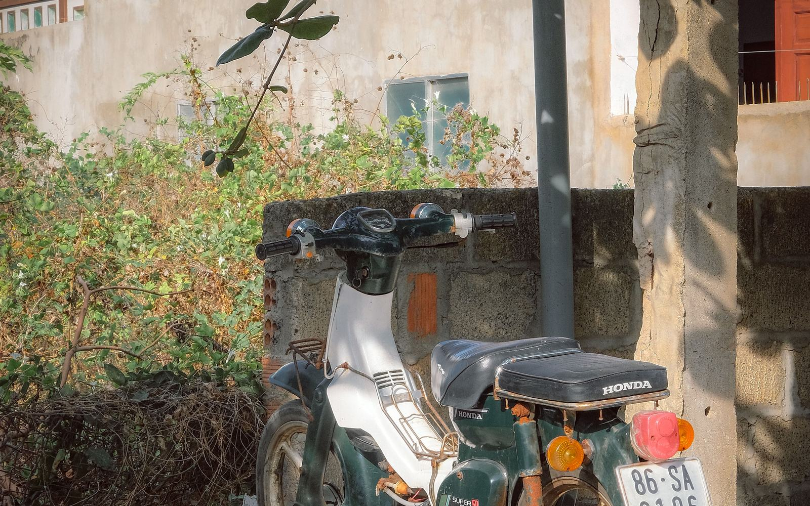
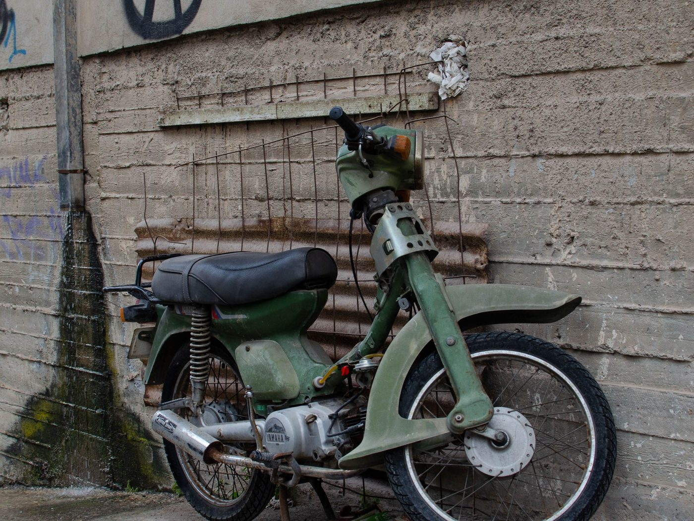
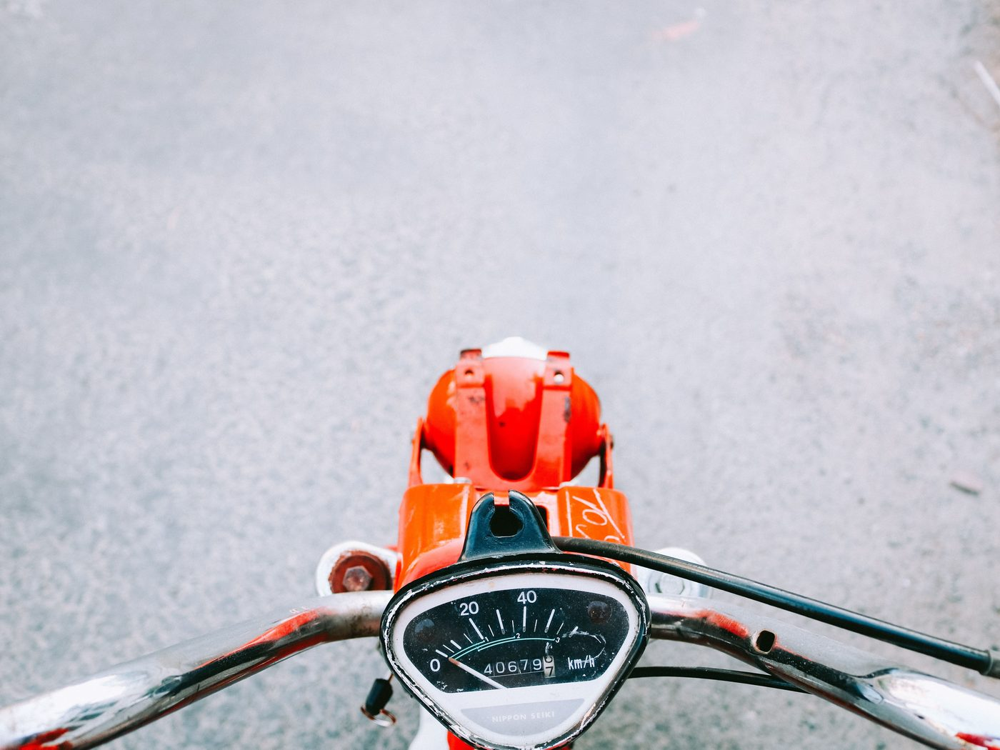
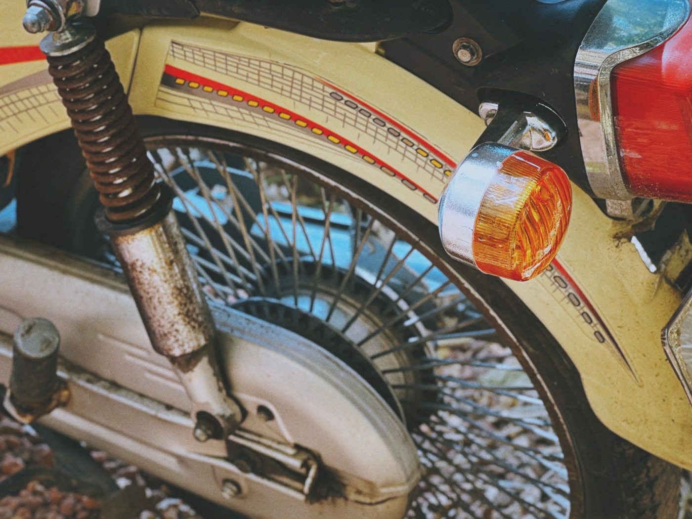

7 ошибок при покупке байка 50сс во Вьетнаме

Байк во Вьетнаме покупают быстро — часто в первые дни после приезда, на эмоции и с переводчиком в телефоне. Именно поэтому одни и те же ошибки повторяются из года в год. Ниже — семь, которые стоят реальных денег, и способ обойти каждую.
1. Поверить слову «50cc» вместо документа
Самая дорогая ошибка. Надпись «50cc» в объявлении, наклейка на пластике и слова продавца не значат ничего. Единственное доказательство — Blue Card (cà vẹt), где указан объём двигателя: 49, 49,5 или 50 см³. Если в техпаспорте стоит 110 или 125 — это другой класс транспорта со всеми вытекающими требованиями, каким бы маленьким байк ни выглядел.
Как обойти: до денег попросите фото техпаспорта, где видны объём и госномер, и сверьте номер рамы и двигателя с тем, что выбито на самом байке. Подробный разбор — как подтвердить настоящие 50 кубов по документам.
2. Купить байк без техпаспорта «по договорённости»
«Документы потерялись», «привезу завтра», «здесь так все ездят» — три фразы, после которых сделку стоит прекратить. Байк без Blue Card нельзя нормально продать дальше: местные покупатели такие варианты обходят стороной, и вы остаётесь с техникой, которую некуда деть.
Как обойти: оригинал техпаспорта — в руках до передачи денег, а не после.

3. Ориентироваться на цифру на одометре
Пробег скручивают, и это делается за десять минут. Цифра 12 000 км ничего не доказывает сама по себе.
Как обойти: смотрите на связку признаков — износ резины и тормозных колодок, состояние ручек и кнопок, потёртости на сиденье и подножках, люфты, как байк заводится на холодную. Если всё вокруг говорит «сто тысяч», а на приборке двенадцать — верьте железу. Отдельный разбор: как оценивать пробег байка 50сс.

4. Не сделать холодный запуск и тест-драйв
Прогретый заранее двигатель скрывает половину проблем. Продавцы, которые знают о недостатке, встречают вас с уже работающим байком.
Как обойти: просите завести с холодного при вас. Послушайте холостой ход, проверьте свет, поворотники, стоп-сигнал и оба тормоза, проедьте хотя бы пару сотен метров с разгоном и торможением. Короткий чек-лист есть в статье проверка байка перед поездкой.
5. Перевести предоплату незнакомому продавцу
Схема «переведи залог, чтобы я придержал байк» — классика для объявлений с красивыми фото и ценой заметно ниже рынка. Деньги уходят, байк не существует.
Как обойти: платить при личной встрече, когда байк и документы перед вами. Слишком низкая цена — это не удача, а самый частый признак того, что что-то не так.
6. Не подумать, как вы будете его продавать
Байк покупается на сезон, а вопрос «куда его потом деть» встаёт за две недели до вылета. Ликвидность закладывается в момент покупки: байк с чистым Blue Card на 50cc и без следов серьёзного ремонта продаётся, «серый» — нет.
Как обойти: относитесь к документам как к главному активу байка. Подробно — как продать байк 50сс в Нячанге перед отъездом.

7. Купить не тот тип байка
Ретро-мокик, скутер-автомат и полумеханика ездят по-разному. Человеку, который впервые сел на двухколёсное, полумеханика с четырьмя передачами в городском трафике даётся тяжелее автомата. И наоборот — кому-то важна именно посадка и характер ретро-модели.
Как обойти: определитесь до осмотра, что вам нужно: автомат или механика и какие вообще бывают типы байков 50сс. Проехать пару минут на каждом варианте стоит дешевле, чем менять байк через месяц.
Как мы закрываем эти семь пунктов
Мы работаем магазином именно поэтому: сами ищем байки по всему Вьетнаму, сами проверяем техпаспорта, привозим в Нячанг, меняем масло, заправляем, проверяем и моем. Вы приезжаете смотреть готовый байк с документами на руках, а не отыгрываете все семь рисков в одиночку. Цена одна на все байки — 10 000 000 ₫ (≈ 400 $ · 37 000 ₽).
Коротко
Документы важнее внешнего вида, холодный запуск важнее одометра, личная встреча важнее предоплаты. Если выполнить только эти три правила, шесть ошибок из семи уже не случатся. Дальше — наличие в каталоге и полный чек-лист проверки байка.